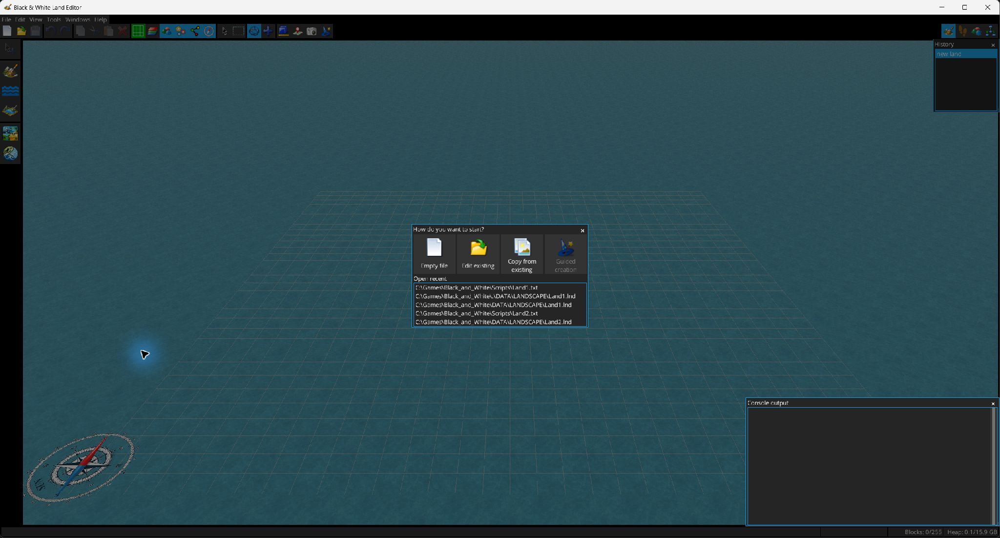

Der Editor behandelt die Landschaft (.lnd) und das LHX-Initialisierungsskript (.txt) als zusammengehörige Projektkomponenten und speichert jeweils die Komponente, die ungespeicherte Änderungen enthält.

.lnd- und .txt-Dateien. Beim Öffnen eines LHX-Skripts kann die darin referenzierte Landschaft automatisch geladen werden, wenn der Spielordner konfiguriert ist..lnd/.txt-Dateien auf; die maximale Anzahl ist konfigurierbar.importiert Blöcke aus einer anderen Landschaft, ohne die aktuelle zu ersetzen. Die in den importierten Daten verwendeten Regionen werden Zielregionen zugeordnet. Der Dialog unterstützt automatische Zuordnung, manuelle Zuordnungs-/Importentscheidungen, das Merken von Zuordnungen und das Löschen gespeicherter Entscheidungen.
Nach der Zuordnung erscheint das importierte Gelände als Vorschau in der 3D-Ansicht. Verschieben Sie es an die Zielposition und bestätigen Sie mit Enter; Esc bricht ab. Eine Ausrichtung am Raster kann angefordert werden.
liest eine PNG-Datei, wandelt sie in Gelände um und lässt Sie anschließend das erzeugte Gelände positionieren. Vor dem Import können Sie:
Heightmap exportieren schreibt das aktuelle Gelände als PNG. Die Screenshot-Schaltfläche  speichert die gerenderte 3D-Ansicht.
speichert die gerenderte 3D-Ansicht.
Nach einer ungewöhnlichen Unterbrechung erscheinen Wiederherstellungseinträge im Startfenster und können erneut geöffnet oder entfernt werden. Wiederherstellungsdateien werden automatisch gelöscht, nachdem das zugehörige Dokument normal gespeichert wurde.